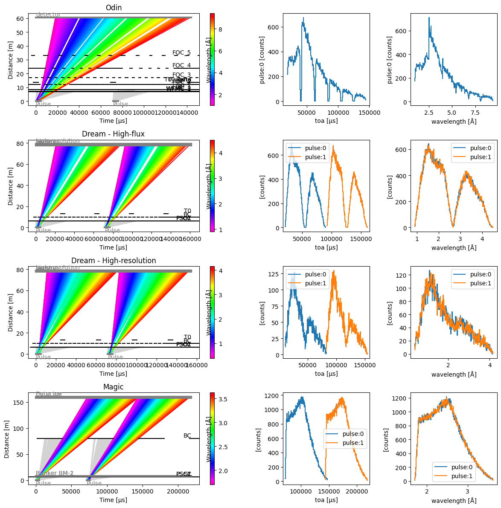

ESS instruments#
Here we construct a grid of plots showing the chopper cascades of different ESS instruments.
[1]:
import matplotlib.pyplot as plt
from matplotlib.gridspec import GridSpec
import tof
instruments = {
# Note that for Odin, we could also use the 'ess-odin' facility when building
# the Source below
"Odin": tof.facilities.ess.odin(pulse_skipping=True),
"Dream - High-flux": tof.facilities.ess.dream(high_flux=True),
"Dream - High-resolution": tof.facilities.ess.dream(high_resolution=True),
"Magic": tof.facilities.ess.magic(psc_opening_angle=105, wavelength_band_min=1.8),
}
fig = plt.figure(figsize=(9, 3 * len(instruments)))
gs = GridSpec(nrows=len(instruments), ncols=4, figure=fig)
source = tof.Source(facility="ess", neutrons=1_000_000, pulses=2)
for i, (name, params) in enumerate(instruments.items()):
model = tof.Model(source=source, **params)
results = model.run()
ax1 = fig.add_subplot(gs[i, 0:2])
ax2 = fig.add_subplot(gs[i, 2])
ax3 = fig.add_subplot(gs[i, 3])
results.plot(ax=ax1, blocked_rays=5000)
ax1.set_title(name)
furthest_detector = sorted(results.detectors.values(), key=lambda c: c.distance)[-1]
furthest_detector.toa.plot(ax=ax2)
furthest_detector.wavelength.plot(ax=ax3)
